Практичний досвід · журнал «ДентАрт» 2020 №2
Комбінована методика закриття пародонтального дефекту препаратом емалевої матриці та гелем з гіалуроновою кислотою
Combined Technique for Closing a Periodontal Defect Using an Enamel Matrix Protein and Hyaluronic Acid Gel
У структурі стоматологічних захворювань нині одне з перших місць посідають захворювання пародонту.1 Однією з етіологічних причин цих захворювань, окрім поганої гігієни ротової порожнини (мікробні бляшки, біоплівки), є місцеві травматичні (ятрогенні) причини. До них належать дефекти, що виникають при неправильному протезуванні (зафіксована глибоко під ясна коронка, базис знімного протеза, що здавлює ясенні сосочки, та ін.), при пломбуванні (надлишок композитного матеріалу, потрапляння миш'яковистої пасти у міжзубний проміжок), некоректному ортодонтичному лікуванні, а також при хірургічних втручаннях. У цій статті йдеться про ятрогенне хірургічне втручання, яке призвело до втрати кісткової тканини, зв'язкового апарату зуба і м'яких тканин, включаючи весь міжзубний сосочок в естетично значущій зоні зубів 11 і 12.
Мета статті — оцінити можливість застосування комбінованої методики, що поєднує використання препарату емалевого матричного протеїну «Емдогейн» під час хірургічного втручання, а в післяопераційному періоді — ін'єкційного введення препарату гіалуронової кислоти hyaDENT BG для відновлення тканин пародонту і створення біло-рожевої естетики в естетично значущій зоні. Оцінка застосовуваної методики робилася на підставі поданого у статті клінічного випадку.
Пацієнтка Н., 44 роки, скаржилася на виражений дефект ясен і кістки в зоні зубів 11 і 12. При зборі анамнезу зі слів пацієнтки з'ясовано, що в цій ділянці робилося хірургічне втручання електрокоагулятором, після якого й утворився дефект.
При огляді ротової порожнини у пацієнтки видно виражену кровоточивість ясен, гноєтечу з пародонтальних кишень, пародонтальні кишені глибиною 4-9 мм, рухливість зубів I-II ступеня. Загалом можна констатувати всі симптоми, які вказують на наявність у пацієнтки генералізованого пародонтиту. Але крім перерахованого вище, в зоні зубів 11 і 12 був повністю відсутній міжзубний сосочок, як з вестибулярного боку (фото 1), так і з піднебінного (фото 2), через дефект м'яких тканин просвічувався фрагмент секвестру, що мав рухливість. На зубах непрямі реставрації: 14, 13 — безметалеві коронки (мостовидна конструкція), 21, 22 — вініри, на зубах 11 і 12 — тимчасова конструкція.
Для встановлення остаточного діагнозу і планування подальших реконструктивних втручань була зроблена рентгенографія зони дефекту (фото 3) і заповнена пародонтальна карта пацієнтки. На рентгенограмі чітко видно зону резорбції міжальвеолярної перегородки між зубами 11 і 12.
При зондуванні глибини пародонтальних кишень у зоні жувальних зубів показники були від 4 мм до 9 мм, визначалася велика кількість біоплівки, виражена кровоточивість і гноєтеча. У фронтальній ділянці глибина зондування становила 2-4 мм, крім зони власне дефекту, там визначалася рецесія 2 мм і глибина зондування 2 мм, як на вестибулярній стінці, так і на піднебінній, це свідчило про наскрізний дефект і втрату епітеліального прикріплення на 4 мм з обох боків, що є великою втратою м'яких тканин для естетично значущої зони (рис. 1).
Після збору скарг і анамнезу, огляду та діагностичних досліджень пацієнтці поставили діагноз генералізований пародонтит II-III ступеня тяжкості, стадія загострення. Дефект м'яких тканин та альвеолярної кістки в зоні зубів 11 і 12 ятрогенної етіології.
- Професійна гігієна ротової порожнини.
- Підбір засобів для індивідуальної гігієни ротової порожнини, навчання їх використанню.
- Згладжування поверхні коренів (SRP), антисептична обробка пародонтальних кишень.
- Хірургічне втручання з препаратом «Емдогейн».
- Обробка ротової порожнини антисептичним 0,12% розчином на основі хлоргексидину протягом 7 днів.
- Заміна тимчасової конструкції на зубах 11 і 12.
- Ін'єкційне введення препарату гіалуронової кислоти hyaDENT BG для формування контуру м'яких тканин за шаблоном нової тимчасової конструкції.
- Заміна тимчасової конструкції на постійну на зубах 11 і 12.
Вибір і складання плану лікування
Як один з можливих варіантів лікування, розглядався ортодонтичний метод коронального зміщення цементно-емалевої межі (ЦЕМ). При цьому методі за рахунок зміщення могла збільшитися коронкова частина зуба, зменшитися розмір кісткового дефекту і, можливо, можна було сподіватися, що м'які тканини теж перемістяться коронально услід за кісткою. Але для цього клінічного випадку були і негативні моменти в такому варіанті лікування: невелика довжина кореня зуба 12, що при витягуванні могло призвести до його втрати; також не можна було чітко діагностувати ЦЕМ через глибоке під'ясенне препарування під раніше використовувану ортопедичну конструкцію і складно прогнозувати кількість м'яких тканин у зоні дефекту після ортодонтії. А сама пацієнтка не готова була до ортодонтичного лікування.
Тому було обрано комбінований метод, при якому на хірургічному етапі витягувався секвестр, очищався кістковий дефект і на поверхню коренів зубів у зоні дефекту наносився «Емдогейн» для відновлення зв'язкового апарату і кісткової тканини. А в післяопераційний період для формування м'яких тканин у зоні дефекту використовувався препарат гіалуронової кислоти hyaDENT BG у вигляді ін'єкцій.
Таким чином, лікування поділялося на 3 етапи: консервативне пародонтологічне лікування, хірургічний етап та естетична корекція м'яких тканин ін'єкціями гіалуронової кислоти.
Застосування регенеративного матеріалу «Емдогейн»
Під час оперативного втручання на тканинах пародонту до застосування матеріалу «Емдогейн» спочатку поверхню коренів зубів слід обробити PrefGel — це рН-нейтральний кондиціонер для кореневої поверхні з вмістом 24% розчину ЕДТА.
Як працює «Емдогейн». Emdogain (Straumann, Німеччина) — це суміш протеїнів емалевої матриці свинячого походження (фото 4). Препарат наносять на очищену поверхню кореня, після чого він утворює позаклітинну матрицю, яка запускає процеси стимуляції клітин, потрібні для регенерації тканин пародонту та загоєння м'яких тканин.2-4
Що таке гіалуронова кислота і для чого вона в пародонтології?
Гіалуронова кислота (ГК) — полісахарид із сімейства глюкозаміногліканів, вона є одним з компонентів тканин і рідин людини. Це один з основних компонентів позаклітинного матриксу, міститься в багатьох біологічних рідинах (слині, синовіальній рідині та ін.). Бере значну участь у проліферації та міграції клітин.5 Гіалуронова кислота зв'язує воду в міжклітинних просторах, підвищуючи тим самим опір тканин стисканню. Одна молекула гіалуронової кислоти зв'язує і утримує біля себе близько 500 молекул води. Вона бере участь у транспортуванні та розподілі води у тканинах. Гіалуронова кислота визначає бар'єрну і захисну функції міжклітинного простору.6,7 У міжклітинному просторі її молекули формують гелеподібні речовини різної в'язкості, від ступеня якої будуть залежати і функції, що їх виконують відповідні тканини. У людському організмі ця кислота допомагає тканинам адаптуватися, боротися із запальними процесами, бере участь у регенерації тканин. За рахунок міжмолекулярної взаємодії довгі гнучкі молекули гіалуронової кислоти у водних розчинах здатні утворювати тривимірну структуру, яка може відігравати роль щільного молекулярного матриксу.8,9
Сьогодні відомо, що гіалуронова кислота бере участь у контролі таких процесів, як репаративна регенерація тканин, клітинне диференціювання, морфогенез, ангіогенез та запалення. Гіалуронова кислота зв'язує колагенові волокна, білки, компоненти міжклітинної речовини і навіть клітини в єдину систему. Гіалуронова кислота створює об'єм, який визначає міцність і пружність тканин.10
Препарат hyaDENT BG — це комбінація крос-зв'язаної і крос-незв'язаної гіалуронової кислоти нетваринного походження, яка хімічно модифікована спеціально для використання у стоматології. Крос-зв'язана — та, у якої відбувається трансформація прямого молекулярного ланцюжка в 3Д-мережу, що забезпечує безпосередній тривалий ефект стимуляції регенерації та загоєння (фото 5).
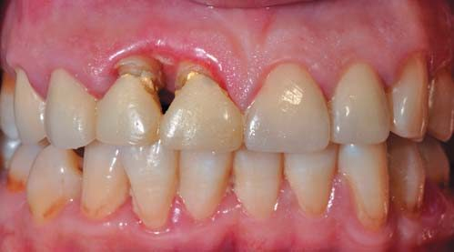
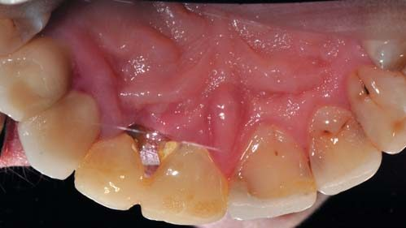
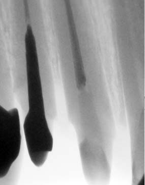
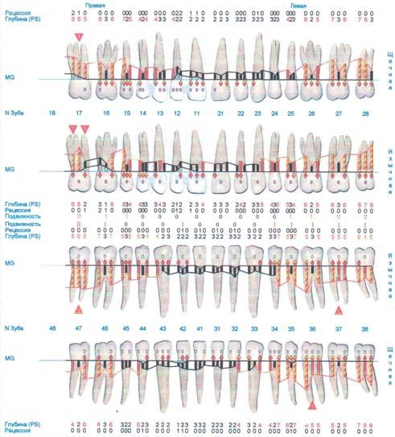
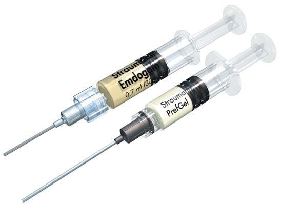
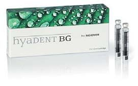
Результати застосування комбінованої методики
Після консервативного етапу пародонтологічного лікування (професійна гігієна ротової порожнини, SRP, підбір засобів гігієни) ясна набули блідо-рожевого кольору, щільної консистенції, припинилися кровоточивість і гноєтеча.
Після хірургічного етапу лікування було зроблено заміну тимчасової конструкції і проведено перший курс ін'єкційного введення гіалуронової кислоти hyaDENT BG — 3 процедури з інтервалом 3 тижні. Контур м'яких тканин уже після першого курсу ін'єкцій набув видимого об'єму і з вестибулярного, і з піднебінного боку (фото 6, 7).
Усього в цьому клінічному випадку було проведено 3 курси ін'єкцій гіалуронової кислоти по 3 процедури з інтервалом між курсами по 3 місяці. Після естетичної корекції м'яких тканин була знову заповнена пародонтальна карта і зроблена рентгенографія.
На рентгенограмі зони зубів 11 і 12 (фото 8) видно чіткий контур міжальвеолярної перегородки, яка відновилася, з чітким кістковим рисунком. За даними, поданими на пародонтальній карті, можна припустити відновлення епітеліального прикріплення і при вимірюванні відзначити відсутність рецесії в зоні зубів 11 і 12. Але при цьому збереглися пародонтальні кишені, більші ніж 5,5 мм, у дистальних ділянках верхньої та нижньої щелеп, що говорить про необхідність подальшого хірургічного регенеративного лікування генералізованого пародонтиту.
За фотографіями 9, 10 можна оцінити зовнішній вигляд після лікування. При огляді ясенний край блідо-рожевого кольору, без видимих дефектів м'яких тканин. При зондуванні глибина ясенної борозни становить близько 3 мм, що видно і на періокарті. Ясенний контур повністю відновлений, і виконано заміну тимчасової конструкції зубів 11 і 12 на непрямі реставрації — коронки.
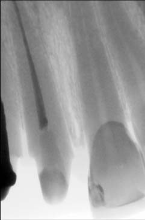
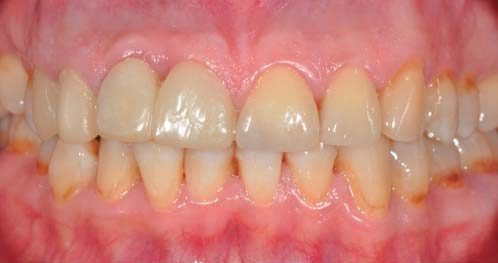
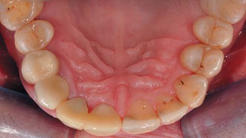
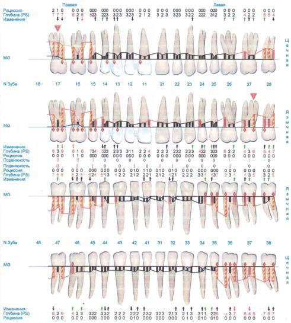
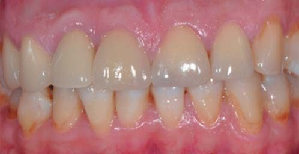
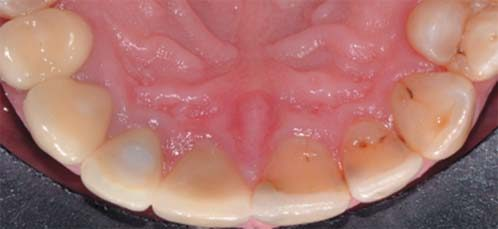
Висновки
Позитивна динаміка клінічних проявів при усуненні пародонтального дефекту підтверджена при огляді, фотопротоколюванні, пародонтологічному зондуванні та рентгенографії, що демонструє успішність обраного алгоритму лікування та доцільність комбінованого застосування препарату «Емдогейн» для відновлення зв'язкового апарату і кісткової тканини з ін'єкціями гіалуронової кислоти hyaDENT BG для прискорення загоєння і формування м'яких тканин у зоні дефекту.
Література
- Гажва С. И., Гулуев Р. С. Распространенность и интенсивность воспалительных заболеваний пародонта (обзор литературы) // Обозрение стоматологии. — №1. — 2002. — С. 28.
- Kao R. T. I., Nares S., Reynolds M. A. Periodontal regeneration — intrabony defects: a systematic review from the AAP Regeneration Workshop. // J Periodontol. 2015 Feb;86 (2 Suppl):S77-104.
- Sculean A. I., Chiantella G. C., Windisch P., Donos N. Clinical and histologic evaluation of human intrabony defects treated with an enamel matrix protein derivative (Emdogain) // Int J Periodontics Restorative Dent. 2000 Aug; 20(4):374-81.
- Cairo F. I., Nieri M., Pagliaro U. Efficacy of periodontal plastic surgery procedures in the treatment of localized facial gingival recessions. A systematic review // J Clin Periodontol. 2014 Apr; 41 Suppl 15:S44-62.
- Хасанов А. Г. и др. // Разработка и применение имплантантов на основе гликозаминогликанов и комплексов метиленового синего в хирургии. Уфа: 2005, 213 с.
- Scott J. // Ciba Found. Symp. 143. 1989. P. 6-20.
- West D. C. // Science. 1985. V. 228. P. 1324-1326.
- Калюжная Л. Д., Шармазан С. И., Моисеева Е. В., Бондаренко И. Н. // Естетична медицина. — 2009. — Т. 10. — №4. — С. 44-46.
- Gailit J., Clark R. A. F. // Current Opinion in Cell Biology. 1994. V. 6. P. 717-725.
- Rami Al-Khateeba and Iwona Olszewska-Czyzb (2020) Biological molecules in dental applications: hyaluronic acid as a companion biomaterial for diverse dental applications. Heliyon. Apr; 6(4): e03722.